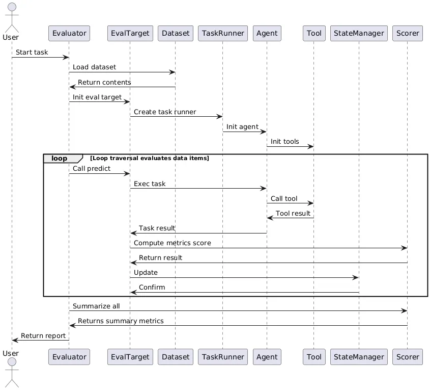

评估（Evaluation）
AWorld的评估系统提供了一套完整、灵活的评估框架，支持多种评估场景和评估目标（如多智能体系统、工具调用、任务完成质量）。基于模块化设计，用户可以轻松扩展评估功能，满足特定的评估需求。评估框架为Agent的持续改进提供了重要支撑。
核心组件
- 评估目标（EvalTarget）。评估目标是评估系统的核心概念，定义了评估的对象和方法。
- AWorld框架内置了两种类型的评估目标：
- AworldAgentEvalTarget：用于评估AWorld智能体的性能
- AworldTaskEvalTarget：用于评估AWorld任务的完成情况
- 用户自定义评估目标：用户可以根据需要实现自己的评估目标。评估目标通过
predict方法执行具体的评估逻辑，返回评估结果。
- AWorld框架内置了两种类型的评估目标：
- 评估指标（Scorer）
- 功能性指标：评估任务完成的准确性
- 性能指标：评估执行效率和资源使用情况
- 质量指标：评估输出内容的质量和多样性
- 评估数据集（EvalDataset）
- 评估数据集用于存储评估所需的数据，支持多种数据格式和加载方式。数据集包含输入数据和期望输出，用于对比实际输出与期望输出的差异。
- 评估运行器（EvaluateRunner）
- 评估运行器负责协调整个评估过程，包括数据集加载、评估执行、结果收集和报告生成。
评估流程

- 评估配置。评估开始前需要配置的相关参数：
- 评估目标类型
- 评估数据集路径
- 评估指标选择
- 评估策略设置
- 输出目录
- 数据加载。评估系统从指定的数据集加载评估数据，包括输入数据和期望输出。数据集支持多种格式，如JSON、CSV等。
- 评估执行。遍历数据集中的每个数据项，执行以下步骤：
- 输入数据提供给评估目标
- 执行目标的
predict - 收集执行结果
- 计算评估指标
- 记录评估过程
- 结果分析。评估完成后，框架会提供以下内容：
- 详细结果。汇总所有评估项的结果
- 执行摘要。计算整体评估指标，运行时间，成功率等
- 评估报告。生成评估报告，可能涉及问题，性能分析，分布可视化等信息
- 结果记录。保存评估结果到设置的目录
- 执行摘要：总执行时间、成功率、平均指标等
from aworld.evaluations.base import Evaluator, EvalTarget, EvalDataCase
from aworld.core.task import Task
from aworld.runner import Runners
class MyEvalTarget(EvalTarget):
async def predict(self, index: int, input: EvalDataCase[dict]) -> dict:
# 执行评估逻辑
task_input = input.case_data["input"]
expected_output = input.case_data["expected"]
# 执行任务
result = await Runners.run_task(
task=Task(input=task_input, agent=my_agent)
)
# 比较结果并返回评估指标
return {
"success": result.answer == expected_output,
"accuracy": calculate_accuracy(result.answer, expected_output),
"time_cost": result.time_cost
}
# 创建评估器
evaluator = Evaluator(
eval_target=MyEvalTarget(),
dataset=my_dataset
)
# 执行评估
results = await evaluator.evaluate()
最佳实践
评估的模块化、可扩展设计确保了AWorld的评估框架可适应先进的研究或生产要求。常用于四类评估：
- 单项评估。对单个数据项进行评估，适用于精确的性能测试。
- 批量评估。对整个数据集进行批量评估，适用于整体性能分析。
- 对比评估。对多个模型或算法进行对比评估，适用于性能比较。
- 渐进评估。逐步增加评估复杂度，适用于能力边界测试。
自定义评估指标
用户可以通过实现Scorer接口来定义自定义的评估指标：
from aworld.evaluations.base import Scorer, EvalDataCase
class CustomScore(Scorer):
async def score(self, index: int, input: EvalDataCase[EvalCaseDataType], output: dict) -> ScorerResult:
# 实现自定义评估逻辑
return custom_score
自定义评估策略
通过继承EvalTarget类，可以实现自定义的评估策略：